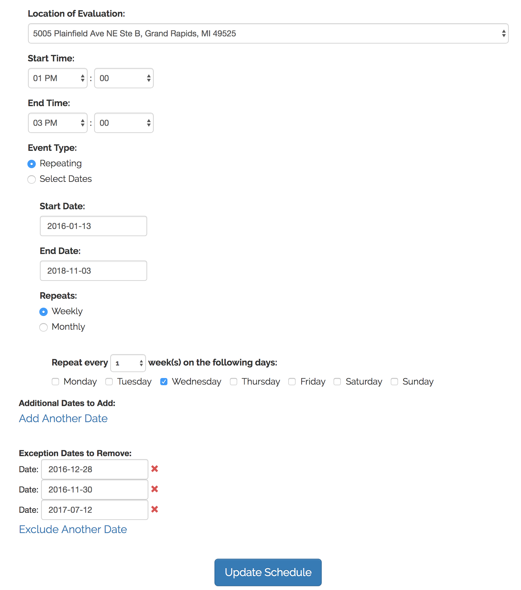

Skill Evaluation Scheduler
- The skill evaluation scheduling project was part of a cross-departmental project involving the first remote video skill evaluation in the industry, combined with a proprietary inexpensive single-use manikin (BlendedCPR.com was overhauled to reflect these changes as well)
- Because this had such far-reaching repurcussions, I took care of company-wide communication: ensuring that everyone knew how this new method of evaluation would work, coordinating with the sales and customer support departments to answer questions, and providing talk tracks for how to explain it
- UI for the in-house evaluator to create the schedule
- UI for customers to schedule an evaluation based on the course taken
- Used IceCube Ruby gem for handling repeated events
- Used the evaluator's input to save a serialized version of their schedule to the database
- Used the customer's input to create an evaluation reservation for the date / time selected
- Re-used the code / functionality to allow instructors to create classrooms in bulk by selecting configuration options and then selecting repeating times / dates
